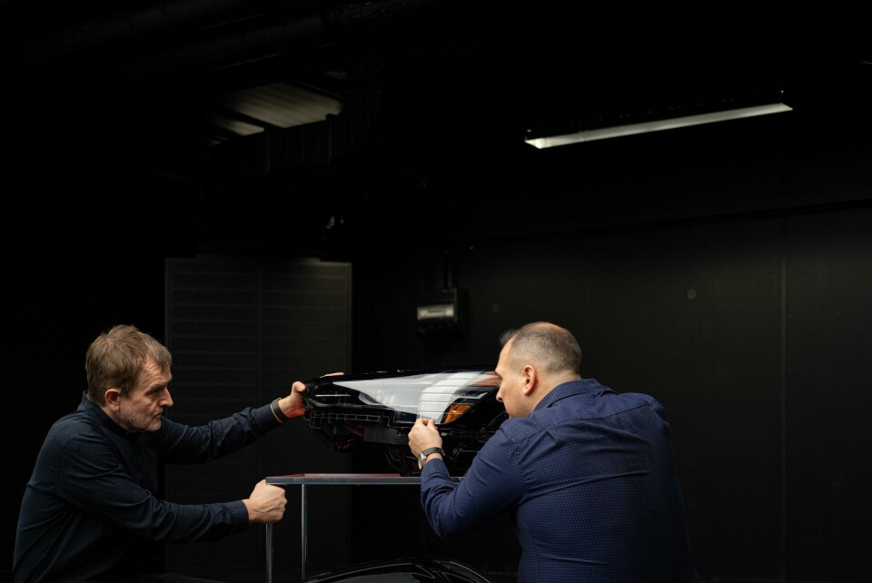

现在不少车把日行灯做成一条很细的线，主灯却藏在另一片区域里。车头看起来越来越简洁，里面的照明部件并没有消失。本文以 Audi A6 e-tron、Volvo EX90 和 Opel Grandland 为例，分析车灯的造型、结构与照明功能之间的关系。

日行灯、主灯与转向信号
日间行车灯主要帮助其他人注意到车辆，近光和远光用于道路照明，转向灯传递方向意图。迎宾动画则是另一种使用情境，发生在人走近车辆时。同一个灯组可以容纳这些不同用途的部件。[1][2]
因此，日行灯的轮廓不能直接反映主灯的照明能力。灯带细，不代表照不远；宣传照片中的车头很亮，也不代表夜间道路照得好。判断外形与功能的关系，需要先找到对应的部件。
Audi A6 e-tron：灯组布置与前脸比例
A6 e-tron 的设计师希望保留概念车低而扁的前脸，但主要照明部件需要较大的空间。团队在访谈中解释，他们把这些部件融入车头的暗色面罩，让上部日行灯保持纤细。[3]
这种处理用到了视觉主次。明亮的细线与周围形成明显对比，容易先被注意到；体量较大的部件融进黑色区域，视觉上不那么突出。技术部件得以保留，前脸也没有因为它们的体积而显得笨重。
这里的美观主要服务于部件整合和外观比例，尚不能据此判断照明效果。尤其是主灯位置较低是否更少眩光，需要另外测试，不能从布置方式推算。
Volvo EX90：开合灯组与迎宾动画

EX90 同样要协调纤细轮廓与较大的照明模块。设计团队把远光模块放在 T 形灯带后方，让灯带横向部分上下分开，为后方模块让出空间。与 Audi 将部件分区布置不同，Volvo 通过结构开合改变同一位置的状态。[4]
品牌还把开合动作做成了类似睁眼的迎宾效果。前者涉及部件的显露，后者希望在人走近时产生情感回应。两者使用了同一结构，评价的重点却不同：照明要看光束，迎宾则要看触发时机和使用者的感受。[5]

为了保留简洁的外形，团队增加了内部结构的复杂度。这也说明，产品外形并不总是被动追随功能；设计师有时会为了某种外观，重新安排结构。增加开合是否值得，还涉及实际体验和长期可靠性，现有资料没有相应耐久比较。[4]
一则 EX90 迎宾灯讨论里，发帖者觉得点亮过程有些突兀，也有回复表示喜欢。另有评论提到，在车库里走动时反复触发动画会造成困扰。设计师设想的亲切感，在不同使用频率和场景下，可能得到不同回应。这些是公开用户自述，不能代表所有车主。[6]
Opel Grandland：根据交通情况调整光束

Grandland 的灯光资料涉及两部分：前脸的发光图形，以及 Intelli-Lux HD 系统的道路照明。前者影响识别和外观，后者处理照射区域。
按 Opel 的说明，摄像头识别前方和对向交通后，系统会调整光束分布。目的在于保留道路需要的照明，同时减少对其他交通参与者的干扰。需要调整的是投向特定位置的光，而不是让整个车头一律更亮或更暗。这是厂商描述的机制和目标，实际效果仍需独立测试。[7]
因而，发光标志的造型和光束控制应当分别评价。标志可以让车头更有辨识度，但对向驾驶者是否感到刺眼，取决于具体照明系统及其工作条件。
照明距离与眩光测试
夜间照明同时关系到本车驾驶者和道路上的其他人。驾驶者需要看清弯道、路边和行人，对向来车的人也需要保持清楚的视线。IIHS 的前灯评价将道路照明与对向眩光一起考察。[1]
它公布的美规 EX90 结果中，所列 2025—2026 年款配置获得 A，即 Acceptable（可接受）。近光在测试条件下没有超过眩光限值，但缓左弯的照明表现不足。这样的结果比一张点亮的车头照片具体得多：眩光符合要求，不等于每个方向都照得充分。[8]
这项结果适用于列明的市场和配置，不能直接套给中国或欧洲版本；它也不评价迎宾动画，或行人从路边看灯时的舒适度。目前的资料不足以比较三款车对行人的眩光影响。